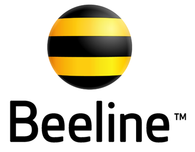
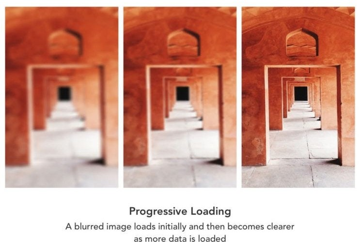

Programming Interactivity
How the course runs
Classes
Weeks
17:00
What each week covers
Web basics
Core elements and layout mental model
JS and Web API
Bringing pages to life with JavaScript
Data fetching, final project
Connecting to real data and shipping your project
Guest Speakers
Glafira Zhur
Google Developer Expert (GDE) for Web, a11y ambassador
Carmen Ansio
Design Engineer at Stripe, animation expert
Let's get to know each other
- Your name
- What are your expectations from the course?
- If you were an animal, what would you be — and why?
Nik Lopin
Software Engineer @ Stripe · 15+ years in the industry


AI usage disclaimer
We read more code than we write
- We generate code more than we write it by hand.
- So we review generated code and judge whether it's good enough.
- Judging well takes knowledge: the mental models behind the technology and the idiomatic patterns of this language, in this environment — plus knowing what other options exist and what clarifying questions to ask.
Learning code is learning to read
Language
- Letters
- Words
- Sentences
Code
- Symbols — decipher each one
- Statements — "this means that"
- Patterns — whole shapes at a glance
Reading in patterns
for (let i = 0; i < items.length; i++) {
render(items[i]);
}
You don't read it symbol by symbol. You see a loop — and know where to look, which condition to check, how to read the body.
Get your hands dirty
Watching code or generating it won't show you the idea behind it. Understanding comes from writing it yourself.
What works for learning to code
- Write code yourself. Without copying, even if it's small.
- Debug real code. Diagnose systematically before searching for the answer.
- Retrieve from memory. Try the syntax before looking it up.
- Small, varied exercises. Same concept, different contexts.
- Trace code. Predict values and output before running.
- Modify worked examples. Change one requirement, see what breaks.
Useful, but not enough alone
- Explain code. Say why each part exists.
- Pair programming, code review. Swap roles, justify decisions aloud.
- Watch tutorials. Pause and reproduce from memory.
- Read documentation. Answer a concrete question, then apply it.
- Copy code. Only as a start — then modify and rebuild it.
Learning is progressive loading

The deeper you learn, the sharper the picture — and the more you notice what's off.
Use AI to explore and understand
- Self-test. Ask AI for open questions on the topic, answer them as completely as you can, then have it point out what was wrong and what to polish.
- Build demos and playgrounds that explain one specific topic.
- Debug on purpose. Ask AI to write buggy code, then find and fix the bugs by hand.
By hand.
Unless told otherwise.
The Web
HTML structure
The browser builds a tree either way. The tags you pick decide whether that tree means anything to a screen reader, a search engine, or the next developer.
Strange, beautiful, broken
Same web. Wildly different builds. "Pretty" and "well-built" are different axes.
- Apps in a tab: Excalidraw · Photopea · Google Earth
- Old, still online: The first website · Space Jam (1996) · Berkshire Hathaway
- Exploration: JODI · Cameron's World · Windows93 · This Is Not a Website · Bruno Simon
Where HTML came from
1991 — A rough proposal
Tim Berners-Lee circulates a memo for sharing physics papers at CERN, borrowing tags from an older print-formatting language called SGML. Fewer than 20 elements. First website in the internet is the CERN webpage.
1995–99 — Browser wars
Netscape and Microsoft race to ship features, not standards — <blink> and <marquee> land in one browser and not the other. The new W3C referees: HTML 2.0, 3.2, then 4.01. More on Wikipedia.
2000–03 — The XHTML detour
The W3C bets on XHTML — HTML rewritten as strict XML — and plans a clean-break XHTML2 with no backward compatibility. Browser makers, stuck supporting the old web, mostly ignore it.
2004 — WHATWG breaks away
Mozilla, Opera, and Apple engineers start their own group outside the W3C. Their draft, “Web Applications 1.0,” becomes HTML5.
2014 — HTML5 ships
The W3C drops XHTML2, adopts the WHATWG draft, and in 2014 publishes “HTML5” as an official, versioned Recommendation.
2019–now — The Living Standard
W3C and WHATWG stop maintaining two competing specs. The WHATWG's continuously updated version is the single source. No “HTML6” — just “HTML,” edited in the open.
No version number.
Edited in public, by the browser makers, constantly.
How a feature gets into HTML
Example: the Popover API — click a step to see it at that stage.
Anyone — a browser engineer, a web developer, a standards body — writes an explainer: the problem it solves, real use cases, and a rough sketch of an API. No spec syntax yet, just the pitch for why the platform needs this.
Popover's explainer, on Open UI →
The explainer moves into the W3C's Web Incubator Community Group (WICG), an open venue where anyone can join, prototype the idea, and stress-test it in real code before it's spec material. Most proposals quietly die here — that's the point of incubating first.
TAG design review of the incubated proposal →
Once the design settles, someone writes it up as normative spec text: a pull request against the WHATWG HTML Living Standard's repo on GitHub, spelling out the exact algorithm steps a browser has to implement.
whatwg/html PR #8221, "Add popover attribute" →
Each engine — Chromium, Gecko (Firefox), WebKit (Safari) — publicly records its position: supportive, neutral, or opposed, usually as tracked GitHub issues. A feature one engine is dead-set against rarely ends up shipping everywhere.
Mozilla's position → · WebKit's position →
An engine ships a real, working implementation, gated behind a flag or an origin trial — a time-boxed token real sites can opt into. Developers get to use the actual feature in production and report back before anything becomes permanent.
Popover on Chrome Status, incl. its origin trial →
When multiple engines converge on identical behavior — verified by shared suites like Web Platform Tests — the spec pull request merges. The feature is now simply part of HTML, with no version number attached to it.
The web platform
A modern browser is an operating system. All of this is plain JavaScript, no plugin required.
- Fetch, DOM, Storage
- Canvas / WebGL / WebGPU
- Web Audio, Web Speech
- Geolocation & sensors
- WebSockets, WebRTC
- Service & Web Workers
Client, server, browser
Client asks → network carries it → server answers with plain text → only then does the browser render anything.
A server doesn't know what a "webpage" looks like. It just sends bytes.
One document, many destinations
- Phone, tablet, desktop — same markup, different layout
- A screen reader is a browser too
- It reads the DOM, not the pixels
Name what content is, not how it looks
Only divs
<div class="header"><div class="nav"><div class="main"><div class="footer">
Same box on screen either way. Only one version tells a screen reader, a search engine, or the next dev what's actually there.
Name a semantic tag
Out loud, anything but <div> — go.
Semantic tags, grouped
| Landmarks | |
|---|---|
| Structure | |
| Interactive |
Landmarks are the map
- One
<main>per page — the actual content, the skip-link target <header>/<footer>can repeat: once for the page, once per<article>- Wrap any set of navigation links in
<nav>, even a short one - Screen-reader users jump landmark to landmark, same as headings
- DevTools' Accessibility panel lists landmarks as their own tree
Headings are the outline
The DOM is a living tree
The browser never sees your source text. It builds a tree of nodes — and keeps that tree valid, even when your HTML wasn't.
- Closes tags you forgot to close
- Un-nests tags that overlap, like
<b><i></b></i> - Moves stray text out of elements that can't hold it directly, like
<table> - Inserts the structural elements you skipped —
<html>,<head>,<body>, even<tbody>
The browser never tells you it happened — a validator does.
Anatomy of an HTML file
<!DOCTYPE html> <html lang="en"> <head> <title>My page</title> </head> <body> </body> </html>
In <head>
<meta charset>,<meta viewport><meta name="description">, Open Graph tags- Favicon and stylesheet
<link>s
In <body>
- Headings, paragraphs, lists
- Images, links, buttons, forms
- Everything the visitor actually sees
What each piece does
<!DOCTYPE html>— use modern rules, not 1990s quirks mode<html lang="en">— the root node;langis what a screen reader uses to pick a pronunciation<head>— metadata for the browser and search engines, nothing the visitor sees<title>— the one required piece of content inside<head><body>— everything the visitor actually sees; structure it with tags that name the content, not divs
DevTools as an x-ray
- Fix low-contrast text live in Styles
- Reveal a hidden element
- Read a failed request's status code
- Read a console error
- Find data hiding in an attribute
- Read the heading outline in the Accessibility panel
Edits a local copy of the tree. Reload and it's gone — free to break things.
Fix the div soup
Refactor into semantic HTML — pick landmarks, build one heading outline, use real buttons and links.
Recap
- A webpage is bytes over a network — the browser turns them into a tree, valid or not
- The tags you pick are what make that tree mean something to a screen reader, a search engine, or the next developer
<head>describes the document;<body>is what the visitor sees- DevTools and a validator both show you the tree you actually built
Next: giving that tree a look.